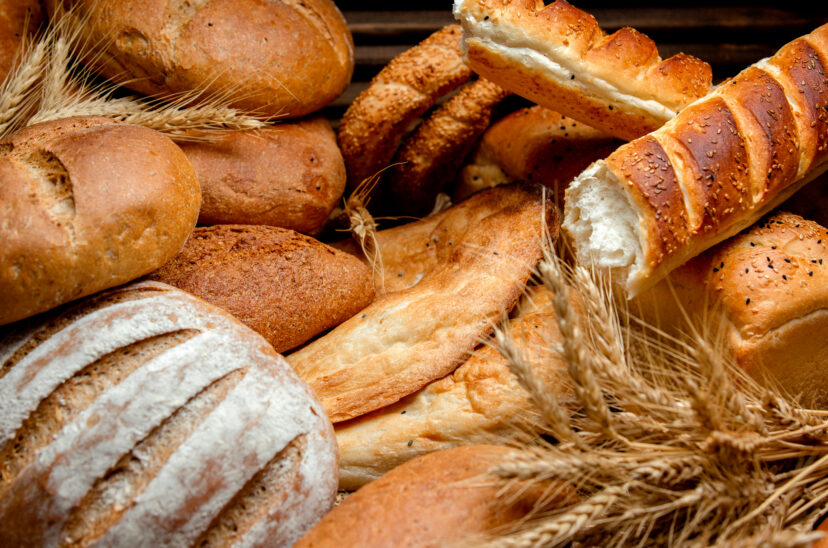
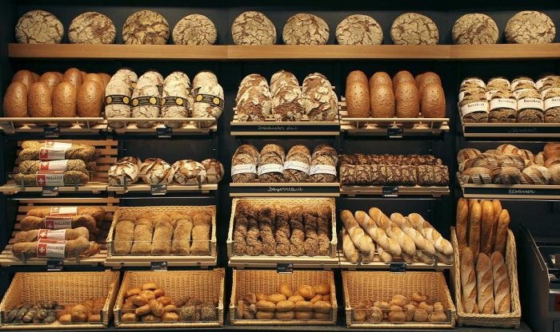
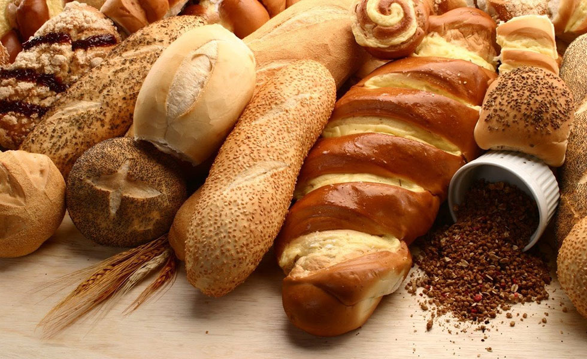

Nuestra Historia
- 

- 
- 
Hace más de un siglo, en el corazón de la provincia de Córdoba, nacía una panadería y pastelería que se convertiría en una institución culinaria en toda la región. Fundada por Agustín Fernández en el año 1874, esta panadería y pastelería se estableció en la zona céntrica de la ciudad de Córdoba, marcando el inicio de una tradición que perduraría a lo largo de generaciones.
Agustín Fernández, un hábil panadero y pastelero, comenzó su negocio con la pasión por crear panes de la más alta calidad y exquisitos pasteles artesanales. Su compromiso con la excelencia y el respeto por las recetas tradicionales lo llevaron a ganarse la confianza y el aprecio de la comunidad local desde el primer día.
Con el tiempo, la panadería de Bendito Pan se expandió y abrió tres sucursales en lugares estratégicos de la provincia: una en el histórico barrio de Cofico, otra en el bullicioso centro de la ciudad y la tercera en la hermosa Villa Allende. Cada sucursal mantuvo la misma dedicación a la calidad y autenticidad que había sido el sello distintivo de la panadería desde sus inicios.
La especialidad de la casa era el pan en todas sus variedades. Desde el clásico pan francés hasta el rústico pan integral, pasando por el suave pan de leche y el tradicional pan criollo. Cada pan era amasado con cuidado, horneado a la perfección y entregado fresco y fragante a los clientes todos los días.
La pastelería artesanal era otra joya de la panadería. Los pasteles, tortas y facturas que salían de sus hornos eran verdaderas obras maestras de la repostería. Desde las medialunas doradas y esponjosas hasta las tortas de cumpleaños decoradas con exquisitez, los productos de Bendito Pan eran una delicia para el paladar y la vista.
A lo largo de los años, la panadería y pastelería Bendito Pan se convirtió en un punto de encuentro para la comunidad. Las familias se reunían en sus mesas para compartir café y delicias recién horneadas, mientras que los vecinos confiaban en la panadería para proveer el pan fresco de cada día.
La tradición de calidad y excelencia de Bendito Pan se transmitió de generación en generación. La familia Fernández continuó al frente del negocio, manteniendo viva la herencia de Agustín y asegurando que cada producto siguiera siendo una muestra de la pasión y el compromiso que habían sido los pilares de la panadería desde sus inicios.
Hoy, la panadería y pastelería Bendito Pan sigue siendo un lugar icónico en la provincia de Córdoba. A través de los años y los cambios, ha mantenido su reputación como un oasis de autenticidad y sabor en medio de la vida moderna. Los cordobeses y visitantes de todas partes siguen disfrutando de sus panes y pasteles como lo hacían hace más de un siglo, honrando la visión y el legado de su fundador, Agustín Fernández.